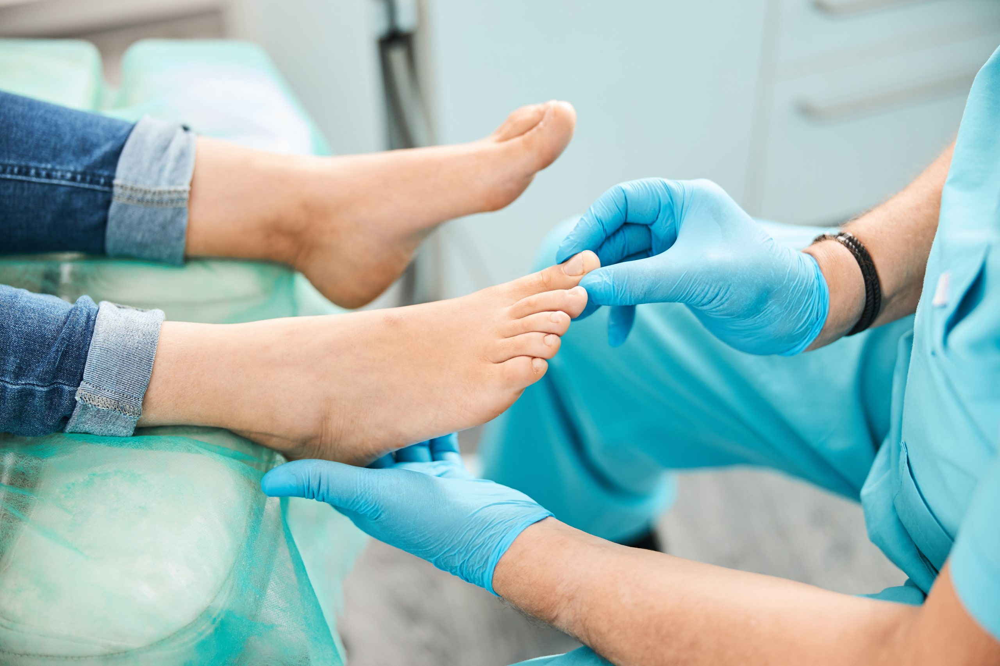
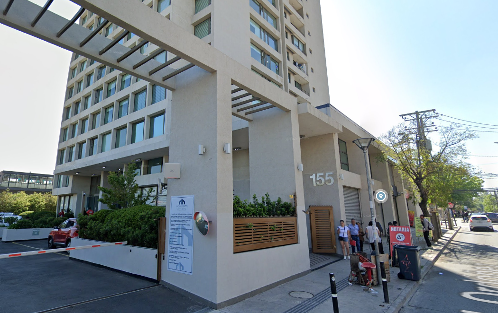
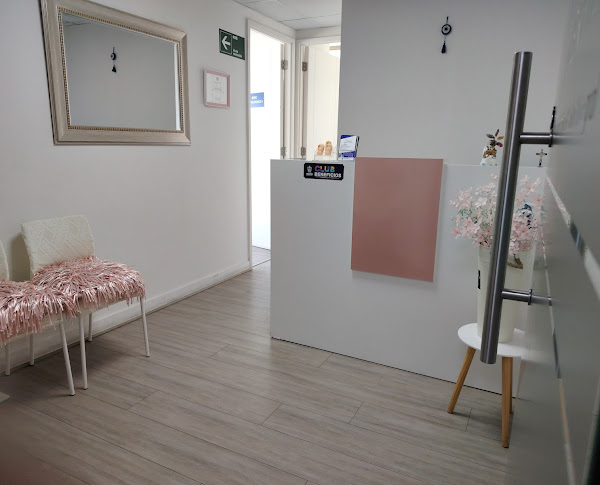

Tus Pies, Nuestra Misión.
Servicio De Podología Personalizado
Contamos con los mejores podólogos. Todos son certificados por el ministerio de salud.

Sobre Nosotros
Conoce la visión y misión de Verpies.
Visión
Nuestra visión es ser la clínica podologica de referencia en el área de la medicina ambulatoria convirtiéndonos en un centro líder en el sector. Ser una clínica reconocida por su calidad y excelencia en el servicio al cliente, manteniendo así nuestro liderazgo en el mercado.


Misión
Aplicar y transformar el conocimiento de los profesionales altamente calificados en valor para el beneficio de los clientes y así prestar una atención podologica de calidad y personalizada en beneficio de cada uno de nuestros pacientes.
Tu Experiencia en Verpies: Paso a Paso
Desde tu llegada hasta tu recuperación, te acompañamos en cada etapa.
Agendar Hora
Contacta con nosotros vía WhatsApp para reservar tu cita.
Evaluación Inicial
Nuestros especialistas realizan un diagnóstico completo de tus pies.
Tratamiento Personalizado
Aplicamos el plan de tratamiento más adecuado para tus necesidades.
Seguimiento y Cuidado
Te ofrecemos recomendaciones y seguimiento para mantener la salud de tus pies.
Resultados de Pacientes
Área Destacada
Además contamos con convenio para el Cuerpo de Bomberos de Maipú, la Municipalidad de Maipú y Cesfam Maipú.
Preguntas Frecuentes
Tenemos la respuesta que necesitas
1. ¿Dónde Están Ubicados?
📍 General Ordóñez 155, Oficina 1503 – Maipú, Santiago.
2. ¿Existe Algún Metro Cerca?
🚇 Sí, estamos a pasos del Metro Plaza de Maipú (Línea 5).
3. ¿Qué Tipos de Servicios Hay?
🦶 Ofrecemos atención en:
- Podología clínica.
- Tratamiento para pacientes diabéticos.
- Técnicas avanzadas para el cuidado del pie.
- Manejo de uña encarnada.
- Extracción de helomas (con derivación a cirugía si es necesario). Atención coordinada con centro médico.
- Eliminación de hongos.
4. ¿Cuáles Son Las Formas De Pago?
💳 Aceptamos todos los métodos de pago: tarjetas de débito y crédito, transferencias bancarias y pagos en efectivo.
5. ¿Disponen De Estacionamiento?
🚗 Sí, contamos con estacionamiento para nuestros pacientes.
6. ¿Las Podólogas Están Certificadas?
📄 Sí, nuestras podólogas están debidamente certificadas y capacitadas para brindar atención profesional y segura.
7. ¿Utilizan materiales y tecnología de punta en los tratamientos?
💡 Sí, en nuestra clínica trabajamos con materiales de alta calidad y tecnología de última generación, lo que nos permite ofrecer tratamientos más precisos, seguros y efectivos. Nos mantenemos actualizados constantemente para garantizar a nuestros pacientes una atención moderna y confiable.